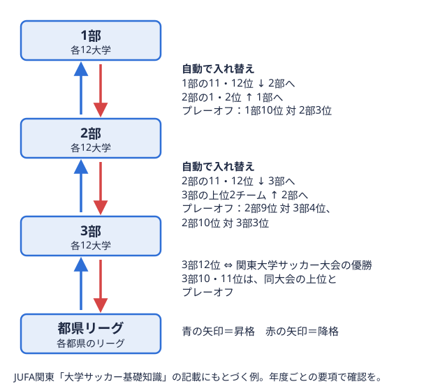

観戦ガイド 2026-08-28
東北地区大学サッカーリーグの仕組み｜2026年の1部8チーム・2部13チームと入替戦ルール
はじめての方向け
東北地区大学サッカーリーグは、2026年度は1部8チーム（2回戦総当たり参加するチームが、ほかのすべてのチームと対戦する方式。2回戦総当たりなら、同じ相手と2回戦う。用語辞典で見る）・2部13チーム（1回戦総当たり）の2部制で行われています。総当たりとは参加チームすべてと対戦する方式で、2回戦は同じ相手と2回、1回戦は1回ずつ戦います。2025年度まで2部は北・南のブロックに分かれていましたが、2026年度は13チームによる1つのリーグになりました。この記事では、東北サッカー協会が公開している2026年度の大会要項をもとに、リーグの構成、入替戦リーグの境目にいる上と下のチームが、翌年にどちらの階層で戦うかをかけて行う試合。 
まず押さえたい2026年度の全体像
2026年度の大会要項から、リーグの骨格を表にまとめると次のとおりです。
| 項目 | 1部リーグ | 2部リーグ |
|---|---|---|
| チーム数 | 8チーム | 13チーム |
| 試合方式 | 2回戦総当たり | 1回戦総当たり |
| 1チームあたりの試合数 | 14試合 | 12試合 |
| シーズン終了後 | 8位は自動降格上の階層から、下の階層に下がること。例えば1部の下位のチームが、翌年から2部で戦うことになる。用語辞典で見る、6位・7位は入替戦 | 1位は1部昇格戦の権利、2位・3位は入替戦 |
| 期間 | 2026年4月〜11月 | 2026年4月〜11月 |
1チームあたりの試合数は、総当たりの回数とチーム数から編集部が計算したものです。2部は13チームのため、各節で1チームが試合のない週になります。2部の日程は第1節から第13節まで組まれており、期間は2026年4月25日から11月1日までです（JFA 東北地区大学サッカーリーグ2部 日程・結果より）。節ごとの対戦カードは1部の日程・2部の日程で確認できます。
東北地区大学サッカーリーグとは
東北地区大学サッカーリーグは、(一社)東北サッカー協会と東北地区大学サッカー連盟が主催する、東北6県の大学サッカー部によるリーグ戦参加チームが一定の期間にわたって何試合も戦い、成績の合計で順位を決める大会の形式。用語辞典で見るです。2026年度の正式名称は「北日本エネルギーカップ 第51回東北地区大学サッカーリーグ 兼 第75回全日本大学サッカー選手権大会東北地区予選」で、試合会場は東北各県です。
名称に「全日本大学サッカー選手権大会（インカレ）東北地区予選」とあるとおり、このリーグはインカレにつながる予選を兼ねています。要項では、1部リーグの優勝チームにインカレの予選ラウンドへの出場権、2位のチームに強化ラウンドへの出場権が与えられると定められています。上位争いが全国大会への道に直結するため、シーズン終盤の上位対決は特に注目度が高くなります。インカレと、もう一つの全国大会である総理大臣杯との違いは、総理大臣杯とインカレの違いで解説しています。
1部・2部の構成（2026年度）
1部リーグ（8チーム）
1部は8チームが2回戦総当たり（各チームと2回ずつ対戦）で順位を争います。2026年度の所属チームは次の8校です。
2部リーグ（13チーム）
2部は13チームが1回戦総当たりで対戦します。2026年度の所属チームは、青森大学、八戸工業大学、岩手大学、秋田大学、石巻専修大学、宮城教育大学、東北福祉大学、山形大学、東北公益文科大学、弘前大学、青森中央学院大学、福島大学、日本大学工学部の13校です。各校の試合結果は2部のチーム一覧からたどれます。
2025年度からの変更点：2部のブロック制がなくなった
東北サッカー協会の「過去の結果」ページを見ると、2025年度の2部は「2部北」「2部南A」「2部南B」の3つに分かれていました（2024年度は「2部北」「2部南」）。2026年度はこれが「2部」1つにまとまり、要項にも「2026年度以降、本リーグ戦のチーム数編成は以下の通りとする。1部リーグ：8チーム編成 2部リーグ：13チーム編成」と明記されています。
この変更で、2部の順位は13チームの通算成績だけで決まるようになりました。以前のように「ブロックごとの首位」を見比べる必要はなく、1つの順位表を上から見れば昇格・入替戦の争いがわかります。過去の記事やSNSで「北ブロック」「南ブロック」という表現を見かけた場合は、2025年度以前の編成を指していると考えてください。
昇格・降格と入替戦のルール
順位ごとの行き先を一覧で確認
2026年度の要項に書かれた昇格・降格の条件を、順位ごとに整理すると次のとおりです。
| 順位 | シーズン終了後の扱い |
|---|---|
| 1部8位 | 2部へ自動降格 |
| 1部7位 | 2部2位と入替戦 |
| 1部6位 | 2部3位と入替戦 |
| 2部1位 | 1部昇格戦の権利 |
| 2部2位 | 1部7位と入替戦 |
| 2部3位 | 1部6位と入替戦 |
1部の下位とのカードは「7位対2部2位」「6位対2部3位」という組み合わせで、2部の順位が上のチームほど1部の下位チームと当たる仕組みです。1部の5位以上と、2部の4位以下は、原則として翌年度も同じカテゴリーに所属します。
入替戦は90分で、同点なら1部チームが残留
入替戦の試合時間は90分で、要項では「同点の場合、延長戦引き分けのとき、勝敗を決める必要がある試合で、前後半の90分に続けて行う追加の試合時間。用語辞典で見る・PK戦引き分けのとき、両チームが交互に、ゴールの正面からキーパーと1対1でキックして勝敗を決める方法。用語辞典で見るは行わず1部のチームが残留とする」と定められています。2部のチームが1部に上がるには、90分以内に勝ち切る必要があります。引き分けでも残留できる1部側に有利な設計のため、2部側がどの時間帯から勝ち越しを狙いにいくかは観戦時の見どころの一つです。
2部1位の「昇格戦」について
要項では「2部リーグ1位に1部昇格戦の権利を与える」とされています。一方で、昇格戦の対戦相手や試合方式は2026年度の要項ページには記載されていません。昇格戦の詳細は、シーズン終盤に東北地区大学サッカー連盟・東北サッカー協会から発表される情報を確認してください。なお要項には「リーグ戦中の警告反則に対して審判が出す注意。黄色いカードで知らされ、同じ試合で2回受けると退場になる。用語辞典で見る累積は昇格戦へ適用されない。昇格戦中の警告累積は入替戦へ適用されない」という規定もあり、リーグ戦・昇格戦・入替戦はそれぞれ別の大会として警告が数えられます。
ほかの地区と比べると、東北の「同点なら1部残留」というルールの特徴がわかりやすくなります。関東・関西・北信越との違いは大学サッカーの入替戦・昇格降格ルールを4地区で比較にまとめています。
順位表の見方：勝点が並んだときの決め方
勝点順位を決める点数。勝つと3点、引き分けで1点、負けると0点が加わり、合計が多いほど上位になる。用語辞典で見るは、勝利3点・引き分け1点・敗戦0点です。勝点の多い順に順位が決まり、勝点が並んだ場合は要項に沿って次の順で比べます。
| 順番 | 比べる項目 | 内容 |
|---|---|---|
| 1 | 得失点差リーグ戦の順位を決める数字の一つ。取った点の合計から、取られた点の合計を引いたもの。用語辞典で見る | 全試合の総得点から総失点を引いた数 |
| 2 | 総得点 | 全試合の得点の合計 |
| 3 | 当該チームの対戦成績 | 直接対決で勝ったチームが上位（1勝1敗なら当該試合の得失点差・総得点で比較） |
| 4 | 反則競技規則で禁じられているプレー。相手を押す・蹴る、手でボールを扱うなど。起きると相手ボールで再開される。用語辞典で見るポイント | 警告・退場重い反則などで、審判に試合から外されること。赤いカードで知らされ、そのチームは1人少なく戦う。用語辞典で見る・出場停止をポイント化し、少ないほうが上位 |
反則ポイントは、一発退場が1回につき4ポイント、同一試合での警告2回による退場が3ポイント、警告1回につき1ポイント、出場停止1試合につき1ポイントで数えます。サッカーマニアの順位表には勝点・得失点差・総得点が並ぶので、勝点が並んだときは得失点差の列から順に見ていくと順位の理由がわかります。
1部の6位と5位の境目、2部の1位〜3位と4位の境目は、そのまま入替戦・昇格の争いに直結します。終盤は勝点1の差や得失点差1点で行き先が変わる場合があるため、1部の得点ランキング・記録とあわせて見ると、どのチームが得点を重ねているかもつかめます。
試合方法の基本ルール
順位表を読むうえで知っておくと役立つ、要項上の試合方法も整理しておきます。
- 試合時間は90分で、延長戦は行わない（ハーフタイムは15分）
- 交代は登録した最大9名の中から5名・5回まで。脳震盪による交代は最大1人まで追加できる
- 警告3回で次の試合に出場停止
- 外国籍選手は試合エントリー（20名）・出場とも常時5名以内
リーグ戦は延長戦がないため、引き分けがそのまま勝点1として順位表に反映されます。
観戦・応援を楽しむためのポイント
初めて東北の大学サッカーを観に行く方は、まず自分の出身地や関心のある大学が1部・2部のどちらに所属しているかを確認するところから始めるのがおすすめです。試合会場は東北各県にまたがるため、日程で近くの会場を探すと足を運びやすくなります。
シーズン序盤の結果の読み方は、東北地区大学サッカーリーグ1部の4月25日の結果まとめや東北地区大学サッカーリーグ2部の4月29日の結果まとめで確認できます。
その後の1部の順位の動きは、東北地区大学サッカーリーグ1部 5月4日 結果で、仕組みを踏まえて読み解けます。
2部の上位争いが勝点と得失点差でどう決まっていくかは、東北地区大学サッカーリーグ2部 5月9日の結果と順位表で確認できます。
終盤戦の状況は、東北地区大学サッカーリーグ1部 10月3日の結果と2部 10月3日の結果で、入替戦・昇格の争いがどう動いているかを追えます。
1部の順位表を実際の勝点と得失点差で読み解く例としては、東北地区大学サッカーリーグ1部 5月16日の結果まとめが参考になります。
5月下旬の節で1部の上位がどう動いたかは、東北地区大学サッカーリーグ1部 5月23日の結果まとめで確認できます。
全国にどんな大学サッカーのリーグがあるのかを知りたい方は大学サッカーのリーグは何種類？全国9地区と1部・2部の構成、大学の進路選びの段階から大学サッカーに関わりたい高校生の方はサッカー部への進路の選び方もあわせて参考にしてください。
よくある質問
Q. 2026年度の2部に北ブロック・南ブロックはありますか？
ありません。2025年度の2部は北・南A・南Bの3ブロック制でしたが、2026年度は13チームによる1回戦総当たりの1リーグです。
Q. 入替戦で引き分けたらどうなりますか？
90分で同点の場合、延長戦・PK戦は行わず1部のチームが残留します。
Q. 1部で何位までが残留確定ですか？
要項上、1部の1位〜5位は入替戦・自動降格の対象になりません。6位・7位は入替戦、8位は自動降格です。
Q. 1部で優勝するとどうなりますか？
1部優勝チームには全日本大学サッカー選手権大会（インカレ）の予選ラウンド、2位のチームには強化ラウンドへの出場権が与えられます。
---
出典：
- (一社)東北サッカー協会「2026年度北日本エネルギーカップ第51回東北地区大学サッカーリーグ 兼 第75回全日本大学サッカー選手権大会東北地区予選」大会要項（tohoku-fa.jp/college/outline.html、2026年10月17日確認）
- (一社)東北サッカー協会 大学「過去の結果」（tohoku-fa.jp/college/archive.html、2026年10月17日確認）
- JFA 東北地区大学サッカーリーグ1部・2部 日程・結果（1部・2部）
この部活・競技を応援したい方へ。
取材してほしい部活を募集中
オフシーズン・引退後に、長期インターンという選択
部活で培った力を実務で試す。16タイプ診断（30秒）で合う企業がわかります。